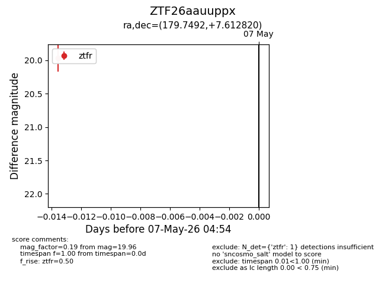
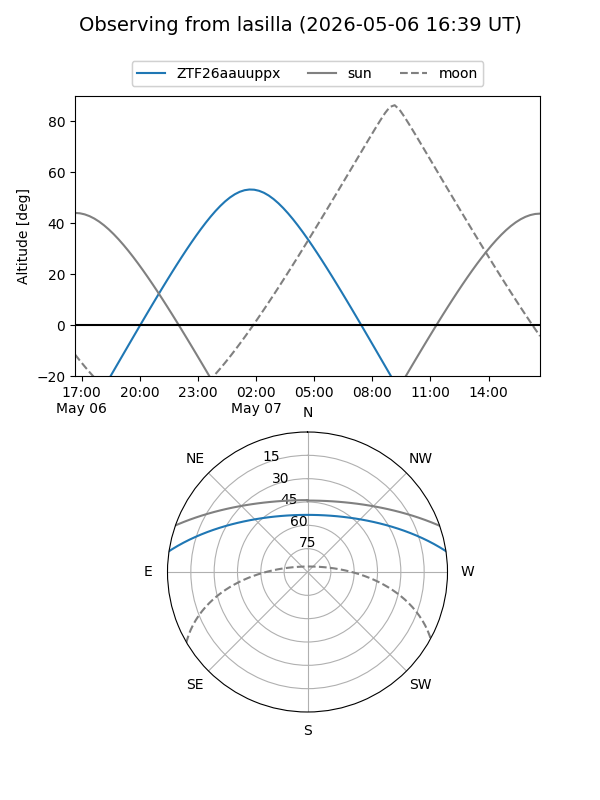
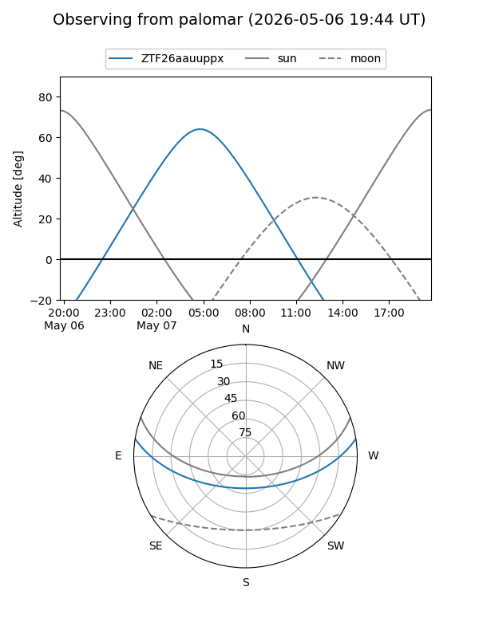

ZTF26aauuppx
Target ZTF26aauuppx at 2026-05-07 04:56
Aliases and brokers:
FINK: link
Lasair: link
ALeRCE: link
alt names
ZTF26aauuppx (ztf,fink_ztf)
Coordinates:
equatorial (ra, dec) = 179.7492,+7.61282
equatorial (HMS+DMS) = 11:58:59.82,+07:36:46.15
galactic (l, b) = (268.0319,+66.86168)
Flags:
Photometry:
last ztfr=19.96
1 ztfr detections
Lightcurve

Visibility


Additional plots